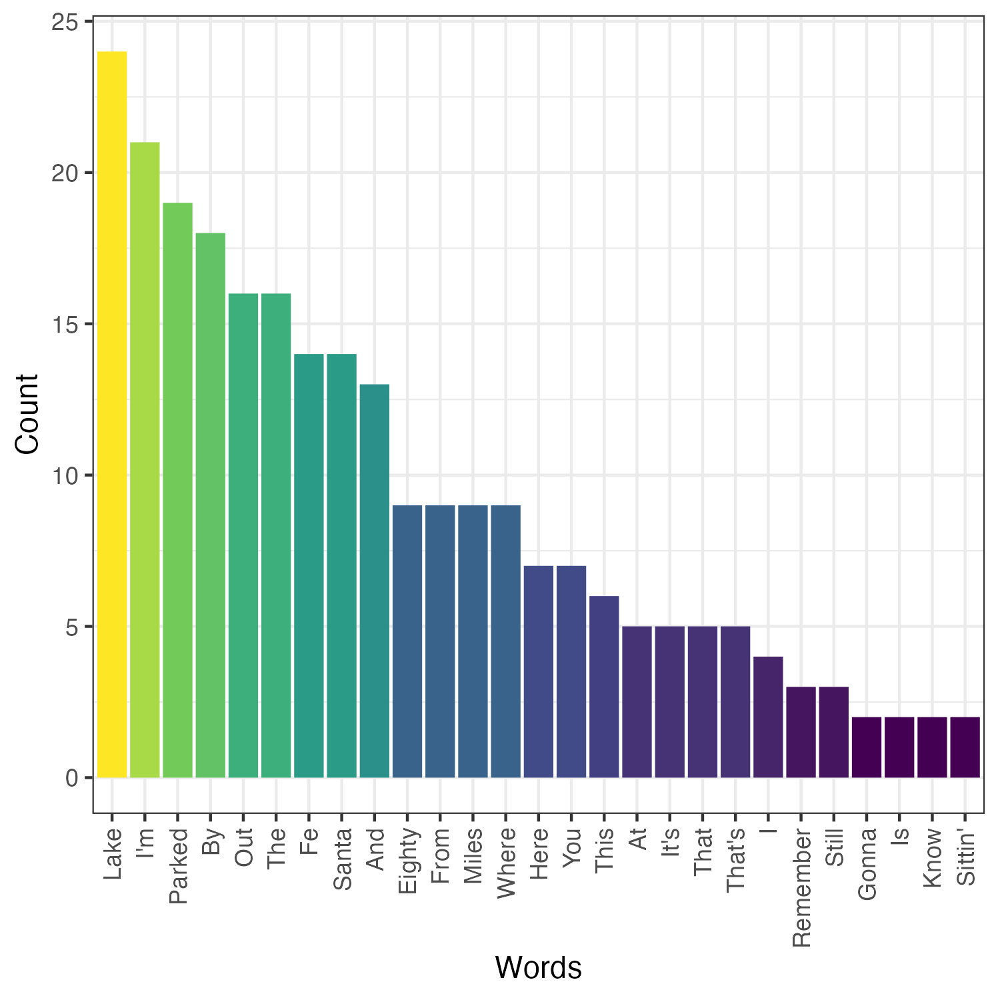

Parked Out By The Lake
Problem to Solve
In case you’re wondering, Dean Summerwind is parked out by the lake, 80 miles from Santa Fe. “Parked Out By The Lake” might sound like a normal song if you aren’t paying attention. But it became “the country song you need to hear” for what you’ll notice if you listen closely.
With a visualization, you might notice that—unsurprisingly—the most frequently used word is “Lake,” followed closely by “I’m,” “Parked,” “By,” “Out,” and “The.”

Visualizing the frequency of words in song lyrics can help you get a sense for a song’s structure (and be just plain fun!). In parked.R, in a folder called parked, write a program to visualize the frequency of words in song lyrics of your choice.
Distribution Code
For this problem, you’ll need to 下载 parked.R files and several text files of lyrics.
下载 the distribution code
打开 RStudio per the linked steps and navigate to the R console:
>
下一页 execute
getwd()
to print your working directory. Ensure your current working directory is where you’d like to 下载 this problem’s distribution code. If using RStudio through cs50.dev the recommended directory is /workspaces/NUMBER where NUMBER is a number unique to your codespace.
If you do not see the right working directory, use setwd to change it! Try typing setwd("..") if in the working directory of another problem, which will move you one directory higher.
下一页 execute
download.file("https://cdn.cs50.net/r/2024/x/psets/5/parked.zip", "parked.zip")
in order to 下载 a ZIP called parked.zip into your codespace.
Then execute
unzip("parked.zip")
to create a folder called parked. You no longer need the ZIP file, so you can execute
file.remove("parked.zip")
Now type
setwd("parked")
followed by Enter to move yourself into (i.e., 打开) that directory. Your working directory should now end with
parked/
If all was successful, you should execute
list.files()
and see parked.R alongside a folder lyrics called lyrics. If not, retrace your steps and see if you can determine where you went wrong!
规格说明
In parked.R, write a program to 阅读 a .txt file of your choice in the lyrics folder. Don’t like those 歌曲? Create your own lyrics file! Sites like genius.com provide lyrics to most popular 歌曲.
Consider writing your program in 3 steps:
- 打开 and clean a lyrics file of your choice, splitting the file into a vector of individual words.
- Convert the vector of words into a data frame that includes each word and the number of times it appears.
- Visualize the data frame using the ggplot2 package.
Ready? Let’s get started.
Reading and Cleaning Lyric Files
Your program should 阅读 a lyrics file of your choice from the lyrics folder. To 阅读 a .txt file, consider using the read_file function in the readr package, part of the tidyverse.
Your lyrics file will likely need to be cleaned. Consider how you could use functions from the stringr package to clean up your data. As much as possible, try to eliminate stylistic inconsistencies between words that are otherwise the same—such as capitalization or the presence of punctuation.
Finally, split your lyric file into a vector of individual words. Here too, consider what the stringr package might offer.
Summarizing Lyrics
With a vector individual words, consider transforming your vector into a data frame of two columns:
| word | count |
|---|---|
| … | … |
The word column could, for instance, contain the unique words present in your lyrics while count includes the count of each of those lyrics.
Visualizing Lyrics
With a data frame of words and their frequency, use the ggplot function to plot the lyrics. Save your resulting plot as a file named lyrics.png using ggsave.
Advice
Consider this as advice to help you on your way!
滤镜 out one-时间 lyrics
If you have too many words you’re plotting on the horizontal axis of your plot, your visualization might get too wide! Consider filtering out words that don’t appear 更多 than once.
Consider variations in capitalization and punctuation
Take a look at robinson.txt, which includes lyrics to Porter Robinson’s “Look at the Sky”. Notice that the word “sky” appears several times, but that it 五月 have different punctuation surrounding it: for instance “sky,” (with a comma) and “sky” without a comma.
Also notice that, in some places, the word “something” is capitalized. In other places, it is not.
These variations are possible to remove! Take a look at what the stringr package can offer.
Usage
Assuming parked.R is in your working directory, enter the below in the R console to test your program:
source("parked.R")
How to Test
The best way to test your code is to keep rendering your visualization until you get to a place you feel satisfied with!
check50
You can also check your code using check50, a program that CS50 will use to test your code when you 提交. But be sure to test it yourself as well!
Run the following command in the RStudio console:
check50("cs50/problems/2024/r/parked")
Green smilies mean your program has passed a test! Red frownies will indicate your program output something unexpected. Visit the URL that check50 outputs to see the input check50 handed to your program, what output it expected, and what output your program actually gave.
如何提交
You can 提交 your code using submit50.
Keeping in mind the 课程’s policy on 学术诚信, run the following command in the RStudio console:
submit50("cs50/problems/2024/r/parked")
Acknowledgements
Lyric data retrieved from genius.com.